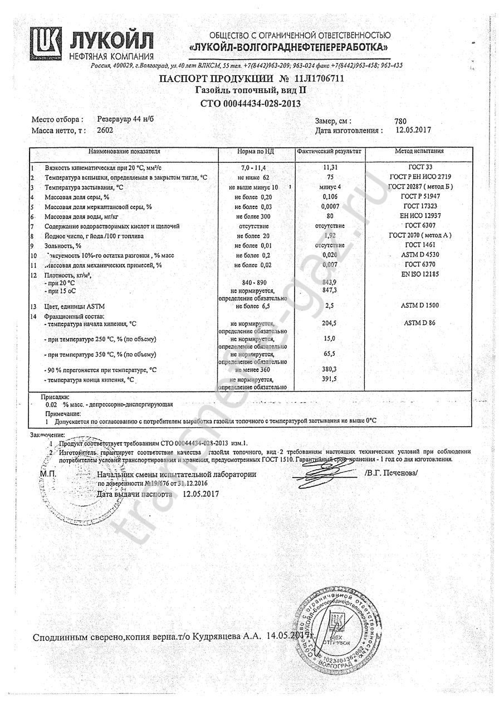

Бензин Евро-4 - ЛУКОЙЛ-Северо-Западнефтепродукт - Lukoil
 Toggle navigation XX English Deutsch Français Español Português Italiano Român Nederlands Latina Dansk Svenska Norsk Magyar Bahasa Indonesia Türkçe Suomi Latvian Lithuanian český русский български العربية Unknown Products FREE adFREE WEBKiosk APPKiosk PROKiosk Pricing Login Registration Sign up for free Login Registration English Deutsch Français Español Português Italiano Român Nederlands Latina Dansk Svenska Norsk Magyar Bahasa Indonesia Türkçe Suomi Latvian Lithuanian český русский български العربية Unknown Help & manuals
Бензин Евро-4 - ЛУКОЙЛ-Северо-Западнефтепродукт - Lukoil
lukoil.com Views 5 years ago Lukoil, Vector, Rapid, Wach, Ultralux, Exel, Dresser, Dynamic, Damper, Idrive, Lukoil.com READБензин Евро-4 - ЛУКОЙЛ-Северо-Западнефтепродукт - Lukoil
READ Show more documents Share Embed Download Info Flag Short-link Link Embed Share from cover Share from page:extended embed settings
1 Бензин Евро -4 скоро появится на АЗС « ЛУКОЙЛ » в Петербурге ЛУКОЙЛ приглашает на работу Почему растет цена на автомобильное топливо «Мельница Штакеншнейдера» — уникальный памятник отечественной истории стр. 3 стр. 4 стр. 5 стр. 7 КОРПОРАТИВНАЯ ГАЗЕТА ООО « ЛУКОЙЛ -СЕВЕРО-ЗАПАДНЕФТЕПРОДУКТ» № 1 (12) ЯНВАРЬ 2011 ВСЕГДА В ДВИЖЕНИИ СОВЕТ ДИРЕКТОРОВ ОАО « ЛУКОЙЛ » ИТОГИ 2010 ГОДА И ЗАДАЧИ НА 2011 ГОД В середине января в Москве состоялось заседание Совета директоров ОАО « ЛУКОЙЛ », на котором были подведены предварительные итоги деятельности Компании в 2010 году и определены приоритетные задачи на 2011 год. В 2010 году прирост запасов углеводородного сырья по российской классификации, по предварительной оценке, составил 123 млн ТУТ. Было открыто шесть месторождений (в Пермском крае, Узбекистане, Египте, Гане), а также 25 новых залежей нефти. Все залежи — на месторождениях ООО « ЛУКОЙЛ -Западная Сибирь» и Пермского края. В прошлом году добыча нефти по Группе « ЛУКОЙЛ » с учетом долей участия в зависимых обществах и зарубежных проектах, по предварительным данным, составила около 96 млн тонн. По сравнению с 2009 годом добыча нефти несколько сократилась ввиду истощения запасов на месторождениях Западной Сибири. Добыча газа по Группе « ЛУКОЙЛ » по предварительным данным составила около 20 млрд куб. м, что более чем на 12% превышает уровень 2009 года. Ожидается, что по итогам прошлого года объем переработки нефтяного сырья на заводах Компании составит 66 млн тонн, в том числе на российских заводах (с учетом мини-НПЗ) – 45 млн тонн. По сравнению с 2009 годом общий Продолжение на стр. 2 ЛУКОЙЛ -ИНФО БЕНЗИН ЕВРО-4 С ОПЕРЕЖЕНИЕМ ГРАФИКА Нижегородский нефтеперерабатывающий завод (ООО « ЛУКОЙЛ - Нижегороднефтеоргсинтез»), входящий в состав Группы « ЛУКОЙЛ », начал производство автомобильного бензина стандарта Евро -4. Это стало возможным благодаря вводу в эксплуатацию в декабре прошлого года комплекса каталитического крекинга. Инвестиции в проект составили 30,3 млрд рублей. Новый комплекс позволит увеличить общее производство бензинов на Нижегородском НПЗ с 1,8 млн тонн до 3,2 млн тонн в год. Выработка дизельного топлива возрастет с 4,2 млн тонн до 4,6 млн тонн в год. На комплексе также может изготавливаться 150 тыс. тонн пропилена в год. Кроме этого, в первом квартале 2011 года на Нижегородском НПЗ планируется ввести в эксплуатацию установку алкилирования, что даст возможность предприятию начать выпуск автомобильного бензина класса Евро -5. Содержание ароматических углеводородов в новом бензине составляет не более 35%, содержание серы в классе 4 — не более 50 мг/кг, в классе 5 — не более 10 мг/кг. Такой бензин обеспечивает так называемый «чистый выхлоп», то есть сводит к минимуму содержание в выхлопных газах оксидов серы и продуктов неполного сгорания ароматических углеводородов, в том числе наиболее канцерогенного и мутагенного вещества — бензпирена. Государственный технический регламент РФ «О требованиях к автомобильному и авиационному бензину, дизельному и судовому топливу, топливу для реактивных двигателей и топочному мазуту» предусматривает переход на выпуск в России бензина класса 4 (стандарт Евро -4) с 2012 года и класса 5 ( Евро -5) — с 2015 года.
Page 2 and 3: 2 № 1 (12) ЯНВАРЬ 2011 КО Page 4 and 5: 4 № 1 (12) ЯНВАРЬ 2011 КО Page 6 and 7: 6 № 1 (12) ЯНВАРЬ 2011 КО Page 8: 8 № 1 (12) ЯНВАРЬ 2011 КО More magazines by this user Similar magazines ×Inappropriate
Loading...
Close Flag as Inappropriate ×Inappropriate
You have already flagged this document.Thank you, for helping us keep this platform clean.
The editors will have a look at it as soon as possible. ×
Mail this publication
Loading...
Close ×Embed
Loading...
CloseDelete template?
Are you sure you want to delete your template? Cancel Delete ×For this magazine there is no download available
Magazine: Бензин Евро-4 - ЛУКОЙЛ-Северо-Западнефтепродукт - Lukoil
Close ×Save as template?
Cancel Overwrite Save Don't wait! Try Yumpu.
Start using Yumpu now!
products
FREE adFree WEBKiosk APPKiosk PROKiosk EDU-WEBKiosk EDU-PROKiosk Showcase APPFeatures
Free Publishing Magazine Publishing Web Publishing Mobile Publishing Developer PublishingResources
Blog Product changes Videos MagazinesDeveloper
Getting started API SDKCompany
Contact us Careers Terms of service Privacy policy Cookie policy ImprintPro Features
Android APP Bookshelf Embed NEWHelp & Support
Help Center Live Support StatusIntegrations
Wordpress Zapier DropboxPlans & Pricing
Overview Cooperation partner: bote.com & i-mag.comCompany
Contact us Careers Terms of service Privacy policy Cookie policy Imprint Terms of service Privacy policy Cookie policy Imprint Change language Made with love in Switzerland © 2020 Yumpu.com all rights reserved ×Choose your language
Main languages
Further languages
English Deutsch Français Italiano Español العربية български český Dansk Nederlands Suomi Magyar Bahasa Indonesia Latina Latvian Lithuanian Norsk Português Român русский Svenska Türkçe Unknown